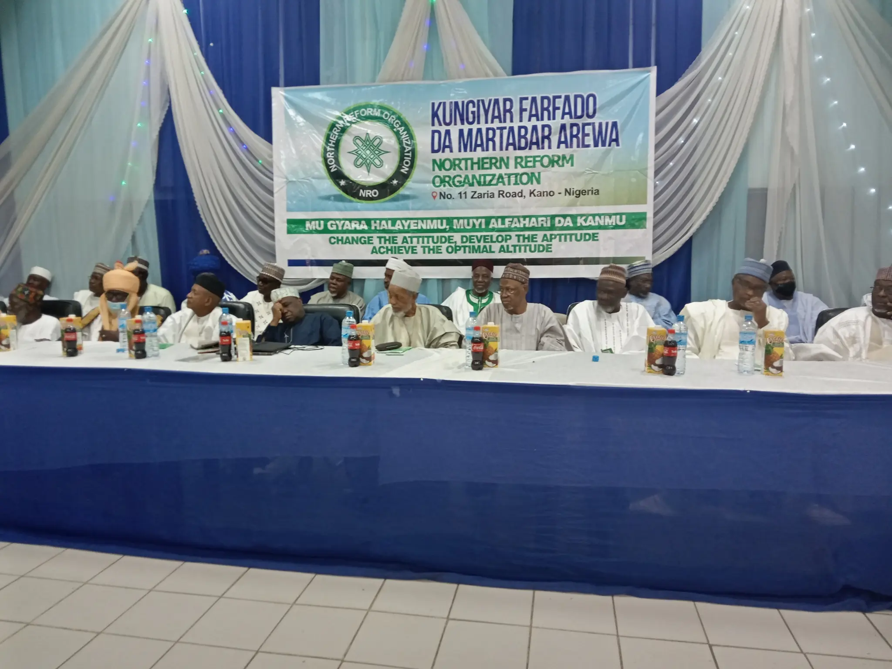

Instituting Reform,
Preserving Heritage.
We bridge the gap between traditional values and modern governance through educational reconstruction, socio-legal advocacy, and economic realignment in Northern Nigeria.
Women Provided Legal Aid
Key States Impacted
Federal Programs Digitized
Advocacy Established

"Loyalty and devotion to a nation that prioritizes identity over colonial interests."
- Reformist Principles, 1908
A Multi-Faceted Movement for Modernization
The Northern Reform Organization (NRO) is not a singular entity but a coalition of academic leadership, socio-legal advocacy, and political realignment. We emerged from a historical necessity to address developmental disparities and integrate Northern Nigeria into the global digital landscape.
From the early nationalist movements of 1908 to today's digital education initiatives, we champion transparency, local representation, and the modernization of traditional institutions.
About the Organization
The Northern Reform Organization traces its ideological roots to the early 20th-century nationalist movements that sought to challenge hegemony and advocate for self-determination. In 1908, a leadership alliance was formed to protect the welfare of residents against inequitable taxation—a principle we uphold today.
As these ideas moved northward, they were adapted by a burgeoning class of educated elites. Today, we represent the convergence of academic rigor, legal advocacy, and political transparency.
Our Vision
To modernize Northern Nigeria without sacrificing its cultural and religious identity, creating a region defined by digital literacy, legal equity, and economic prosperity.
Our Mission
To integrate Northern Nigeria into the global digital and economic landscape through educational reconstruction, socio-legal advocacy for the vulnerable, and ethical political realignment.
Our Distinguished Leadership
Comprehensive Reform Initiatives
Educational Reconstruction
Pivoting to digital-first education and 'Education for All' (EFA). We support initiatives like the National Open University to democratize access across Kano, Borno, and Yobe.
Learn moreSocio-Legal Advocacy
Through partnerships with organizations like WRAPA, we advocate for the Violence Against Persons Prohibition (VAPP) Law and provide legal aid to the vulnerable.
Learn moreDigital Government
Spearheading the Nigerian Government Digital Service (NGDS) to digitize top federal programs and ensure transparency in the energy and agricultural sectors.
Learn moreInstitutional Integrity
Promoting the 'R-E-C-I-T-E' core values in public institutions like the Debt Management Office to ensure prudent fiscal management.
Learn moreEnergy Reform
Advocating for the liberalization of power generation to fuel industrialization and resolving infrastructure bottlenecks in the North.
Learn morePolitical Realignment
Supporting the devolution of power to federating states to bring governance closer to the people and restore ethical leadership.
Learn moreImpact in Action
The Education Ledger Project (ELP)
A data-driven initiative to determine the precise cost of bringing children into schools in states like Kano, Jigawa, and Sokoto. Moving beyond rhetoric to address systemic barriers to literacy through fiscal planning.
Legal Access & VAPP Implementation
Bridging the gap between formal legal protections and lived reality. We mobilize focal persons in grassroots areas to provide counseling and legal defense for women, enforcing the VAPP Law in culturally conservative regions.
Join the Alliance for a New Nigeria
Become part of a network of professionals, academics, and advocates dedicated to restoring the "glory path" through ethical reformation and civic engagement.
Access Research
Exclusive access to education sector analysis reports.
Network
Connect with reformist leaders and traditional rulers.
Impact
Directly support our legal aid and literacy projects.